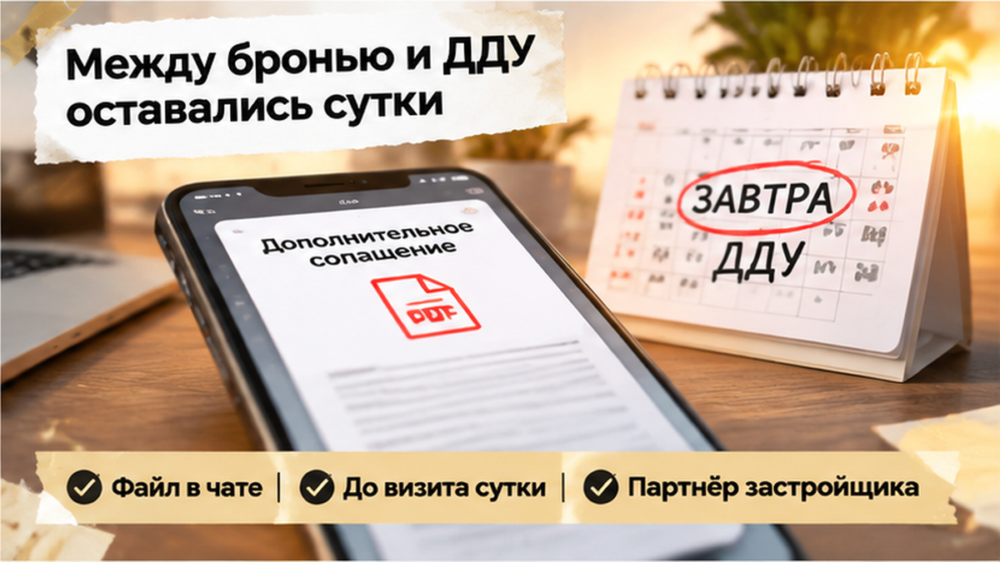

За сутки до подписания ДДУ в Тюмени у семьи всплыла страховка на 186 тысяч рублей — эскроу не открыли, а бронь квартиры через 48 часов сгорела. Ипотеку банк уже одобрил, объект выбрали, первоначальный взнос и ежемесячный платёж посчитали. Но вечером менеджер прислал допсоглашение, которого не было в исходном расчёте. До визита в банк оставался один день: искать ещё 186 тысяч или остановить сделку.
Я, Святослав Шакин, разбираю такие истории в The Риэлтор — о новостройках и сделках в Тюмени без лишней паники.
Семья выбрала квартиру в новостройке, получила одобрение банка и внесла плату за бронь. В расчёте были первоначальный взнос, ежемесячный платёж и сумма, которая должна была уйти на эскроу после подписания ДДУ. Отдельной строки на страховой пакет не было.
Здесь покупатели часто ставят знак равенства: «Ипотеку одобрили — значит, все расходы уже известны». Но одобрение подтверждает кредитную конструкцию в тех данных, которые банк видел на момент решения. Любой новый платёж от офиса продаж автоматически обязательной частью кредита не становится.
Страхование жизни и здоровья заёмщика само по себе не является обязательным по закону. Однако кредитный договор может предусматривать повышение ставки при отказе от полиса. Это нужно проверять по письменным условиям банка, а не по словам менеджера. С имущественным страхованием также нельзя действовать на автомате: требования зависят от условий залога и момента возникновения права собственности.
До брони стоит сверить кредитный договор или его проект, условия бронирования и расчёт сделки, а у банка письменно уточнить: нужен ли конкретный полис, что изменится при отказе и можно ли выбрать другую страховую компанию.
В этой семье такой проверки не было. Существенная сумма появилась уже после выбора квартиры и одобрения ипотеки. В разборе семейной ипотеки на новостройку важной оказалась именно цепочка действий до открытия эскроу, а не сама формулировка «кредит одобрен».

ДДУ и открытие эскроу назначили на следующий день. Вечером перед поездкой в банк покупатели получили от менеджера новый документ: оформить у партнёра застройщика обязательный, как было сказано в переписке, пакет страхования жизни и имущества стоимостью 186 000 ₽.
В первоначальном расчёте этой суммы не было. Из сообщения также не следовало, что банк письменно потребовал именно такой пакет, у конкретной страховой компании и за указанную стоимость. Для семьи это был новый входной платёж, который нужно было найти до подписания документов.
Покупатели сопоставили допсоглашение с уже подписанными и оплаченными документами. Бронь внесена, ипотека одобрена, параметры платежа известны — но сумма на входе выросла, а времени на проверку почти не осталось.
В такой момент нужно запросить кредитный договор с условиями страхования, письменное разъяснение банка о последствиях отказа и полный состав пакета. Если полис влияет на ставку, в расчёте должны быть оба варианта — с ним и без него. Если он добровольный, отдельно проверяются срок, риски, страховая сумма и возможность выбрать другую компанию.
Это не то же самое, что изменение параметров самой ипотеки. В разборе со ставкой, которую банк поднял накануне ДДУ, главным вопросом была стоимость кредита. Здесь неожиданно появился отдельный страховой пакет между бронью и подписанием договора.
Вопрос должен звучать просто: «Кто именно требует этот платёж — банк, договор или офис продаж?» Пока письменного ответа нет, новая сумма остаётся неподтверждённым расходом, а не частью согласованного расчёта.

Сообщение пришло вечером. До визита в офис продаж оставались сутки, а у семьи уже были бронь, одобрение ипотеки и расчёт первоначального взноса, ежемесячного платежа и суммы для эскроу.
В переписке появился новый файл — допсоглашение с пакетом страхования жизни и имущества на 186 000 рублей. Оформить его предлагали у партнёра застройщика.
Для обычного покупателя это звучит почти как команда: «Без этого дальше нельзя». Но файл от офиса продаж ещё не доказывает, что именно такой пакет потребовал банк.
Семья открыла документ на кухне перед поездкой в банк и пересчитала сделку. Решение о квартире принималось при другой сумме, а новый расход появился за сутки до ДДУ.
Бронь удерживает выбранную квартиру на определённый срок, ДДУ регулирует покупку и расчёты через эскроу, а страховой пакет является отдельной частью предложенной схемы. Его обязательность нужно подтверждать отдельно: проверить срок страхования, страховую сумму, состав рисков, порядок оплаты и последствия отказа.
Похожая проверка нужна и при изменении юридических деталей сделки. В разборе смены юрлица застройщика вопрос возник из-за документов, от которых зависело открытие эскроу.

Одобрение ипотеки подтверждает кредитную конструкцию в тех данных, которые банк видел на момент решения. Оно не превращает любой последующий платёж партнёру застройщика в обязательную часть кредита.
В этой истории 186 тысяч не входили в первоначальный расчёт, поэтому накануне ДДУ пришлось заново считать всю сделку.
Банку стоит задать вопросы письменно:
Также нужно уточнить срок, страховую сумму, состав рисков и способ оплаты. Сумма 186 000 рублей сама по себе ничего не объясняет: важно понять, за какой период её требуют и сколько стоит каждая услуга.
Справочные материалы Т-Банка, например, разделяют страхование недвижимости и личное страхование: первое связывают с получением права собственности, второе не считают обязательным, но допускают изменение ставки при отказе. При выполнении требований банка может быть доступен другой страховщик. Это только ориентир — решающими остаются документы конкретного кредитора.
Не стоит подписывать непонятный пакет с мыслью, что деньги потом обязательно вернутся. Для добровольного ипотечного страхования может действовать период охлаждения, но результат зависит от вида продукта, текста договора, страхового случая и уже оказанных услуг.
Сначала нужно получить позицию банка письменно, затем сравнить варианты страхования и обновить расчёт. Если банк говорит о возможном повышении ставки без личного полиса, а офис продаж настаивает на конкретном партнёре, это два разных требования.
На финише проверяют не только страховку. В истории об изменении ипотечной ставки перед ДДУ менялась стоимость самого кредита. А в разборе отменённой регистрации после одобрения ипотеки проблема возникла уже на этапе оформления. Одобрение — не финальная проверка всей цепочки.

Перед визитом в банк семья свела в один расчёт первоначальный взнос, ипотечный платёж, оформление и новые 186 000 ₽. Решение стало арифметическим: допсоглашение не подписывать, пока банк письменно не объяснит необходимость полиса и последствия отказа.
В назначенный день ДДУ не подписали. Счёт эскроу не открыли, основная сумма сделки туда не ушла. Через 48 часов бронь аннулировали.
Квартира не состоялась на предложенных условиях, но деньги по основной сделке не успели попасть на эскроу. Бронь сгорела по условиям договора — семья остановилась до того, как новый расход стал подписанным обязательством.
Пакет от офиса продаж или его партнёра сам по себе не доказывает, что именно его требует кредитор. Если появляется формулировка «обязательный пакет», стоит запросить письменную позицию банка, а не оплачивать его вслепую.
Проблема может быть и в документах на сам объект. Например, при смене юридического лица застройщика банк может остановить открытие эскроу до проверки новой версии документов. А одобрение ипотеки не гарантирует регистрацию: это видно в разборе о ситуации, когда регистрацию отменили после одобрения кредита.
В этой семье решение оказалось неприятным, но контролируемым: бронь пропала, зато основная сумма сделки осталась у покупателей. Сначала должны сойтись документы, требования банка и полный бюджет, затем открывается эскроу.
Страховку на 186 тысяч вынесли в допсоглашение накануне ДДУ — вы бы доплатили ради квартиры или развернулись, даже если бронь сгорит?
До ДДУ стоит собрать всю цепочку расходов — от брони до открытия и пополнения эскроу.
| Что проверить | Где искать подтверждение | Какой вопрос задать | Что сохранить до визита |
|---|---|---|---|
| Первоначальный взнос и платёж по ипотеке | Кредитный договор и расчёт банка | Не изменились ли ставка, сумма кредита и ежемесячный платёж? | Актуальный расчёт с датой и версией документа |
| Страхование жизни и здоровья | Кредитный договор и индивидуальные условия | Обязателен ли полис или отказ только меняет ставку? | Письменный ответ банка и требования к полису |
| Имущественное страхование | Условия залога и страхования | С какого момента возникает обязанность и что именно страхуется? | Перечень рисков, страховая сумма, срок и периодичность оплаты |
| Пакет на 186 000 ₽ или другая крупная строка | Допсоглашение, заявление и счёт партнёра | Что входит в сумму, на какой срок и можно ли отказаться? | Полный текст документа и расчёт каждой услуги |
| Выбор страховой компании | Требования банка к страховщику | Допускается ли альтернативный страховщик с нужным рейтингом и параметрами полиса? | Список требований банка, а не только предложение офиса продаж |
| Бронь квартиры | Договор бронирования и платёжные документы | Когда бронь прекращается и что происходит с оплатой? | Подписанный договор, чек и переписка об условиях |
| ДДУ и эскроу | Проект ДДУ и банковские документы | Какие суммы и в какой момент поступают на эскроу? | Финальная версия ДДУ и подтверждение открытия счёта |

Расходы лучше разнести отдельными строками: бронь, первоначальный взнос, страховки, оценка, госпошлина и прочие платежи. Новый пункт из мессенджера накануне ДДУ нужно сопоставить с прежним расчётом, допсоглашением и условиями бронирования. Переписку и файлы сохраните до окончания сделки.
Письменно спросите банк, требуется ли предложенный полис, как изменится ставка при отказе и допускается ли другая страховая компания. Если банк говорит только о влиянии личного страхования на ставку, а офис продаж настаивает на своём партнёре, это два разных требования.
Период охлаждения не стоит считать автоматическим способом вернуть деньги. Возможность возврата зависит от вида продукта, текста договора, страхового случая и уже оказанных услуг. Сначала нужно понять, что входит в пакет, на какой срок он оформляется и кто получает платёж.
Рабочая последовательность простая: получить позицию банка письменно, сравнить варианты страхования, обновить полный расчёт и только потом принимать решение по ДДУ. Если цифры появились впервые вечером перед подписанием, процесс можно остановить и разобраться, даже если это означает потерю брони.